Tales of Mountains and Seas
The Shan Hai Jing is a geographic and mythological compendium — eighteen books cataloguing mountains, rivers, beasts, gods, and the strangenesses of the early world. From its enormous catalogue, twelve foundational tales are gathered here as a single scroll.
盤古開天地
Pangu Separates Heaven and Earth
Before there was time, there was an egg. Inside the egg, asleep, was Pangu.
He slept eighteen thousand years, then pushed the dark beneath him down to become earth and the brightness above him up to become sky. Each day the sky rose ten feet higher; each day the earth grew ten feet thicker; each day Pangu grew ten feet taller, lifting one and pressing the other.
When the work was done he lay down. His breath became wind, his eyes became sun and moon, his sweat became rain. He had gone into everything.
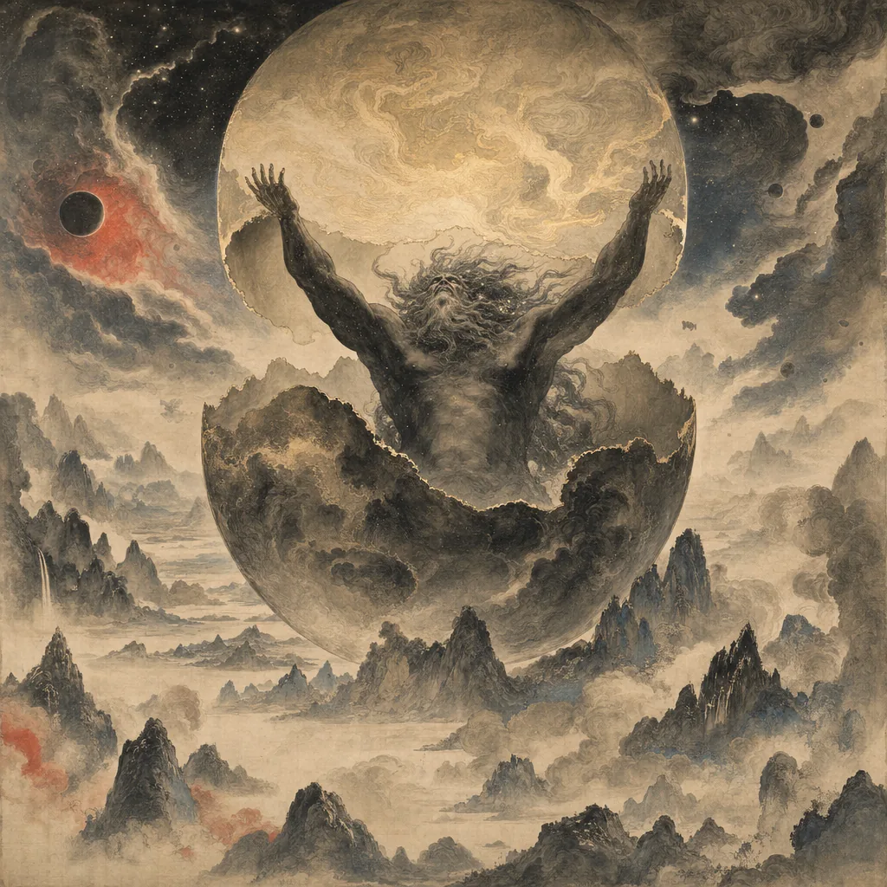
女媧造人
Nuwa Shapes the People
She made hundreds, then thousands. They scattered across the bank. They built fires. They began to need many things at once.
Nuwa walked the new earth alone, her face a woman's face, her body below the waist a great snake. She knelt by the Yellow River and shaped a small figure of yellow clay. She breathed on it. The figure stood up and laughed. She had been alone; she was not alone now.
When her hands grew tired, she dipped a willow branch in the slurry and shook the drops across the empty plains. Where they fell, more figures rose.
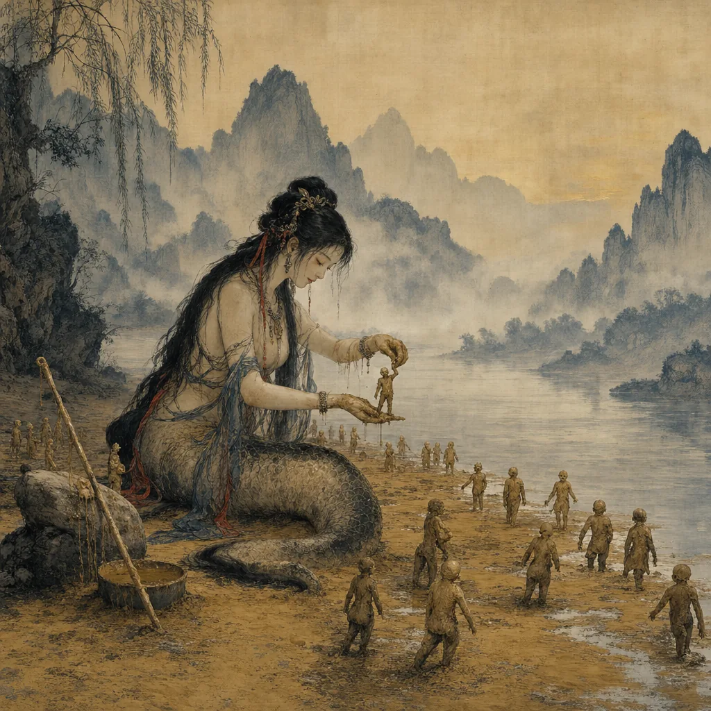
共工觸不周山
Gonggong Strikes Mount Buzhou
The pillar split. The whole northwest corner of the sky tilted.
Gonggong, spirit of water, fought Zhurong, spirit of fire. Defeated, he ran toward the northwest and struck the great pillar that held up the sky in that quarter. The mountain cracked. Stars and clouds slid sideways. From that day, the rivers of the world have run from the high northwest toward the low southeast.
The damage did not stop with the mountain. The sky leaked. Floods welled up from the cracked earth. The world waited for a hand to set against it.
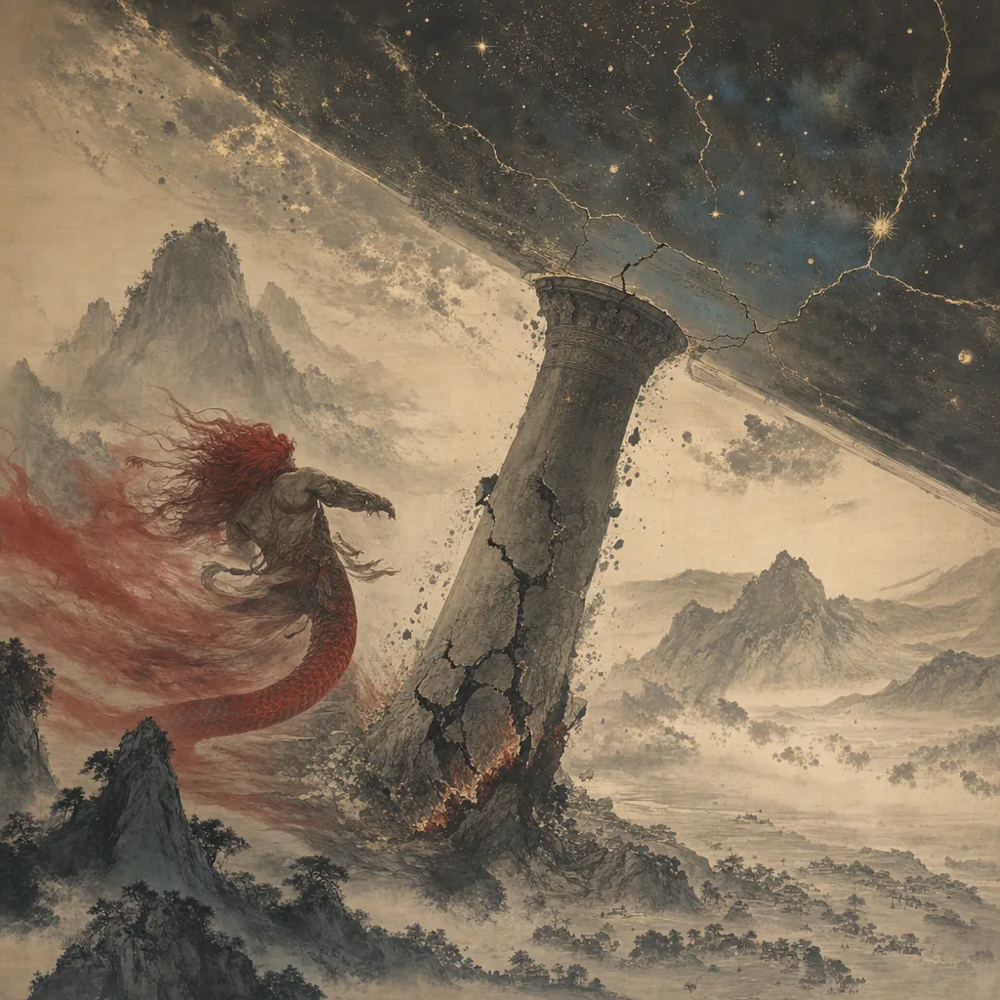
女媧補天
Nuwa Mends the Sky
She built a kiln on the bank of the river. She stacked the cooled stones in baskets and carried them up.
Nuwa gathered five-colored stones — red of cinnabar, yellow of sulphur, white of quartz, black of riverbed, blue of lapis — and fused them in fire. Stone by stone, she pressed the patches into the cracks of the dome. The blue ran back together. The fire stopped falling.
For the broken corner she took the four legs of the great turtle of the marsh and set them at the cardinal points beneath the sky. The legs grew rigid as columns. They held.
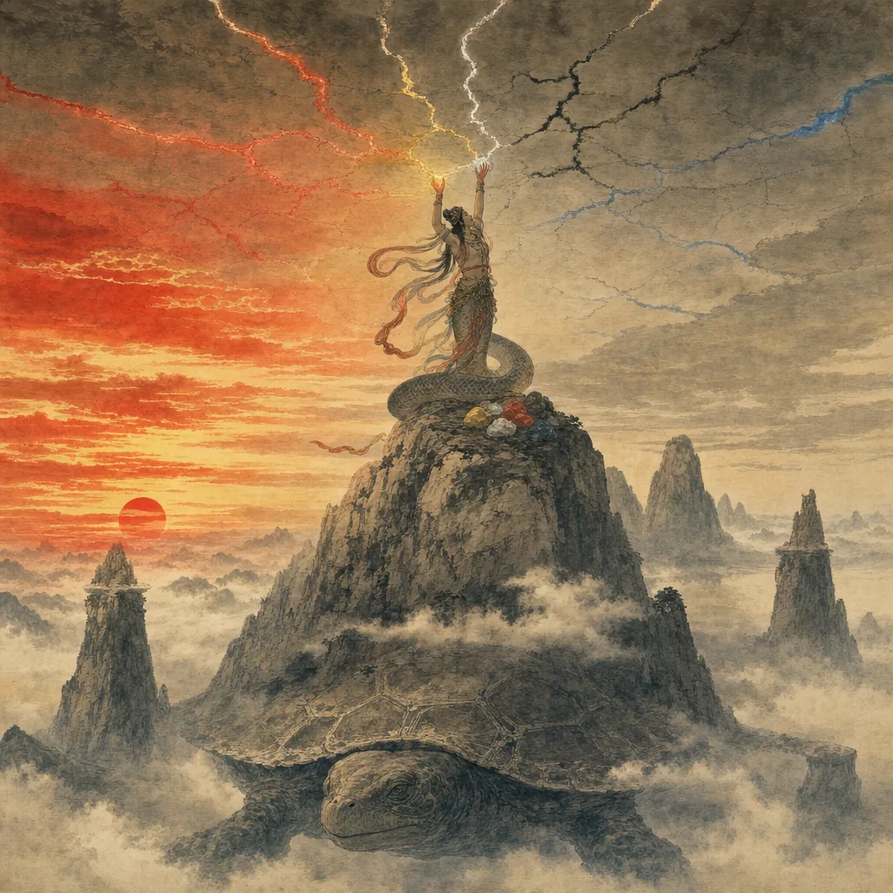
夸父逐日
Kuafu Chases the Sun
He drank the river dry. The bed cracked open under his mouth. He ran on.
Kuafu was a giant of the cold north who decided to catch the sun. He set out at dawn and ran after it. By midday he had pulled near. The land beneath him was burning. His thirst caught up with him. He drank the Yellow River dry. He drank the Wei dry. Two rivers were not enough.
He fell forward in the shade of a low hill. As he died, he pushed his wooden staff into the ground. By the next year, the staff had become a great peach grove that to this day shades travelers crossing in the heat.
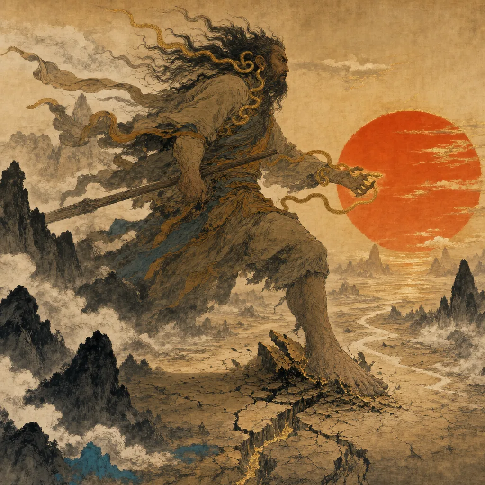
精衛填海
The Bird Jingwei Fills the Sea
The bird is small. The sea is enormous. The work cannot be finished in a thousand years, or ten thousand.
The Emperor Yan's daughter waded into the sea one morning and did not come back. From the place where her last breath went out, a small dark bird rose. It flew west to the mountains. In its beak it carried a twig. It flew back over the water and dropped the twig into the swell.
The bird never stopped. Sailors call her cry jing-wei. She is collecting a debt the sea cannot repay. The work is still real work.
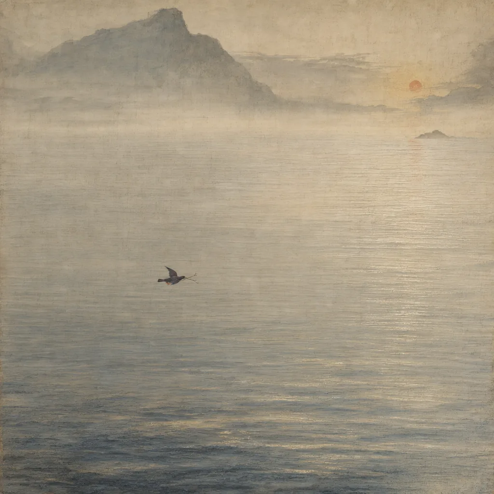
刑天舞干戚
The Dance of Xing Tian
He cannot win. He could not win even when he had his head. He fights anyway.
Xing Tian challenged the Yellow Emperor at the gate of the high palace and was defeated. Even so he stood up. He turned his chest to the wind. His two nipples became two new eyes. His navel became a new mouth. He picked up his axe and his shield and began to dance.
He has been dancing since. There is a part of every person, the people say, that goes on like that — that loses, and then loses again, and then keeps moving.
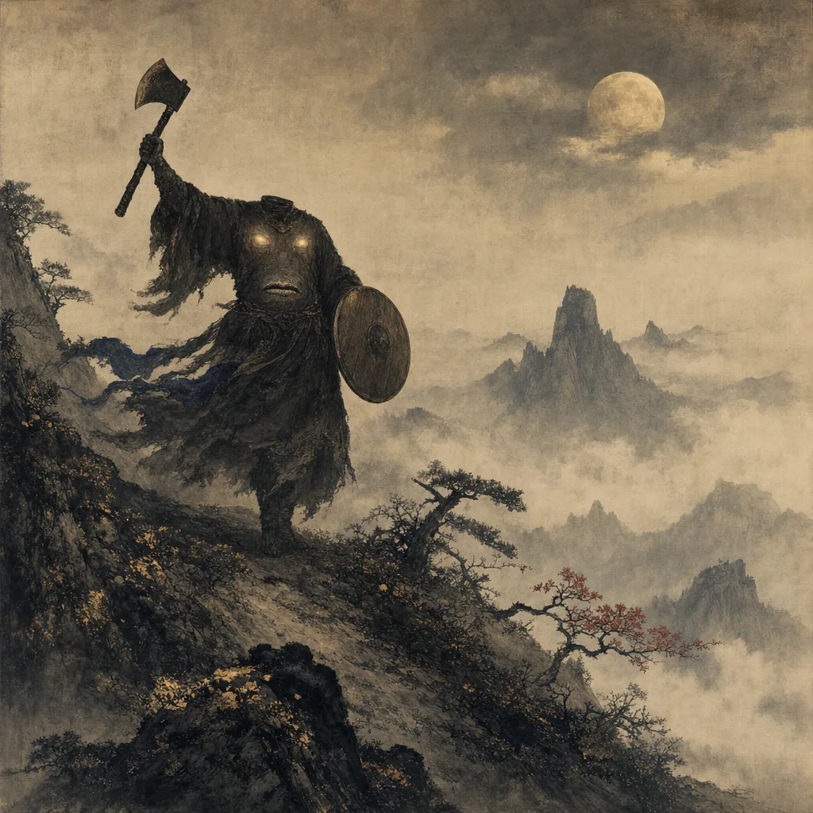
黃帝戰蚩尤
The Yellow Emperor and the Fog of War
Even when the world is fogged, a small steady marker can keep a traveler oriented.
Chiyou raised a fog so thick on the plain of Zhuolu that the Yellow Emperor's soldiers could not tell north from south. The Emperor commanded the building of a wagon with a balanced figure on top, always pointing south. The soldiers found their direction. They re-formed their ranks.
From the South-Pointing Chariot came, in time, all the tools that men have used for finding their way.
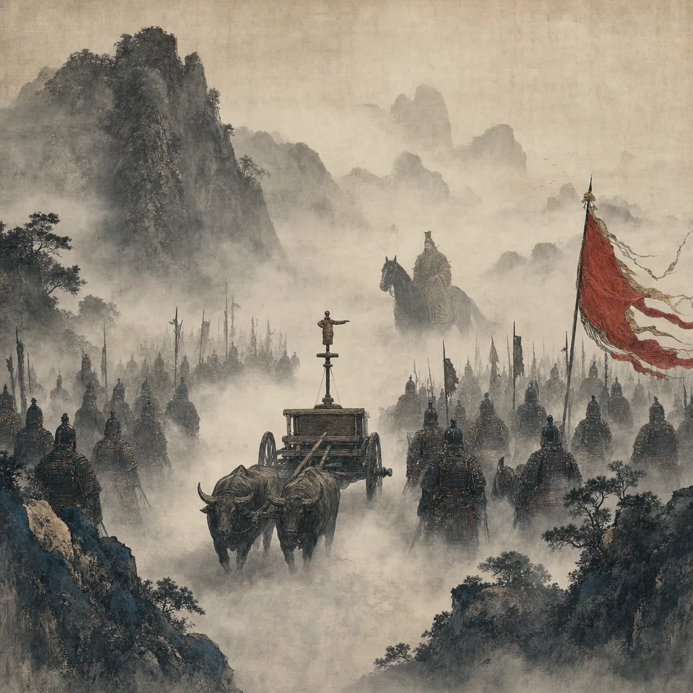
后羿射日
Hou Yi Shoots the Suns
Nine suns came down. The sky changed color from white to pale gold to blue.
The ten sons of the goddess Xihe rose into the sky together one morning, and the world was finished by noon. The rivers boiled. The forests burned. The Yellow Emperor's descendant sent for help. The heavens sent down Hou Yi, the finest archer above.
He set the first arrow on his bow. One after another, nine suns fell. He raised the tenth arrow. The emperor caught his arm: not the last one. He left it. That last sun is the sun we know.
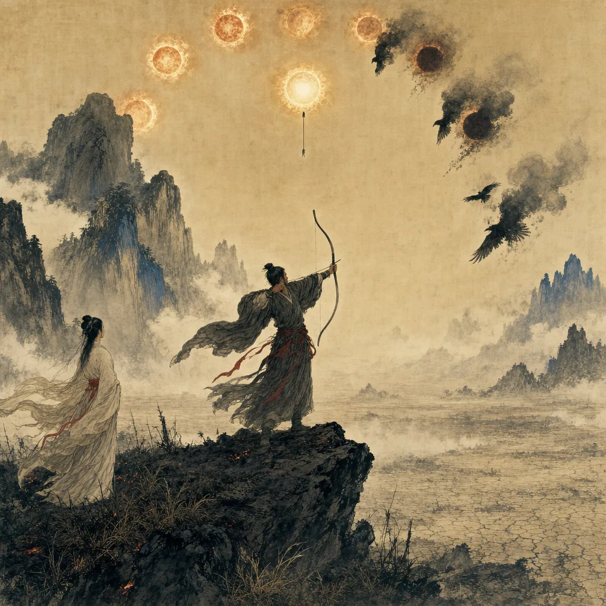
嫦娥奔月
Chang'e Ascends to the Moon
She drank both doses. Her body grew light. She kept rising.
Hou Yi crossed the desert to Mount Kunlun and brought back from Xi Wang Mu a small jar holding two doses of the elixir of immortality. He set it on a high shelf. While he was gone an apprentice with a poor heart came in and demanded it from his wife Chang'e.
Rather than yield, she lifted the jar and drank. She rose past the rafters, past the cloud layer, all the way to the moon. To this day, on the night when the moon is fullest in autumn, men set out cakes and fruit in their gardens and drink to her, and she answers from a long distance.
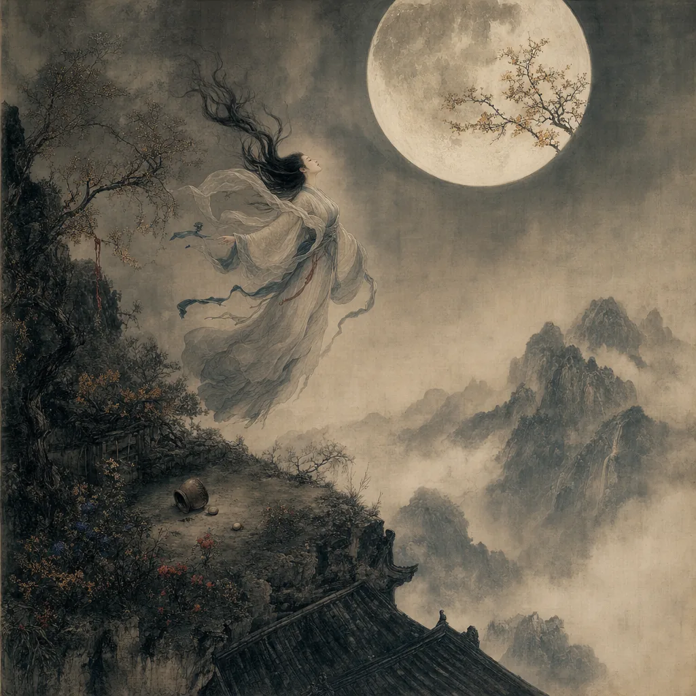
鯀禹治水
Yu the Great and the Flood
The flood was beaten not by walls but by listening to where water wanted to go.
For years the rivers overflowed. Gun built dikes; the dikes failed. His son Yu took the work next. He sat by the rivers for many months. He did not begin with walls. He began by looking at where the water wanted to go.
He cut channels at the headwaters and worked downstream toward the sea. He passed his own gate three times in thirteen years and three times did not stop. In the thirteenth year, the water reached the eastern sea. The plain dried. The Xia dynasty began.
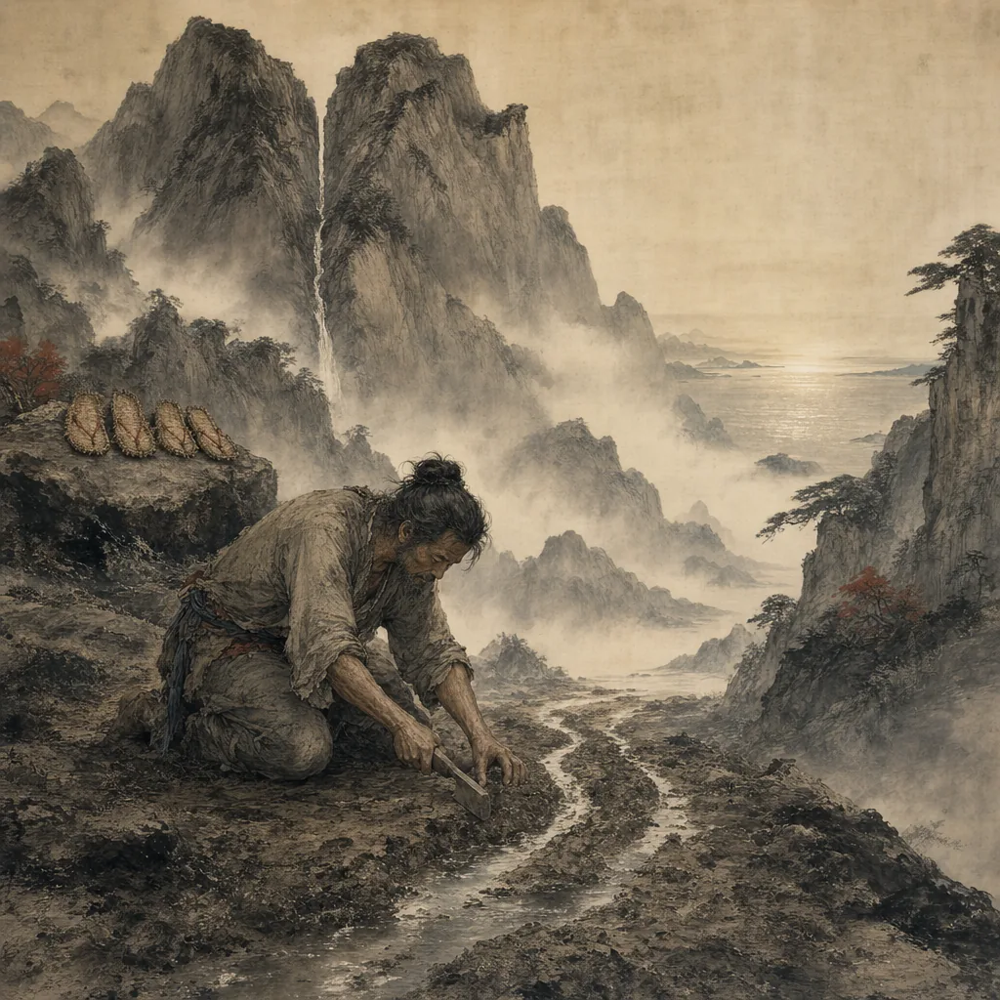
西王母
Xi Wang Mu of Mount Kunlun
From its peak, the four great rivers of the world begin: the river that flows east, west, north, and south.
Far in the west stands the highest of the mountains, Kunlun. Its summit touches the floor of the highest heaven. There Xi Wang Mu, the Queen Mother of the West, sits at her court — a peach tree of immortality at her side, a nine-tailed fox in her courtyards, a three-legged bird carrying her messages.
She does not come down often. But the world is held in part by her. The flood, the suns, the people, the sky — they are all part of her tally. She keeps the count. She knows the names.
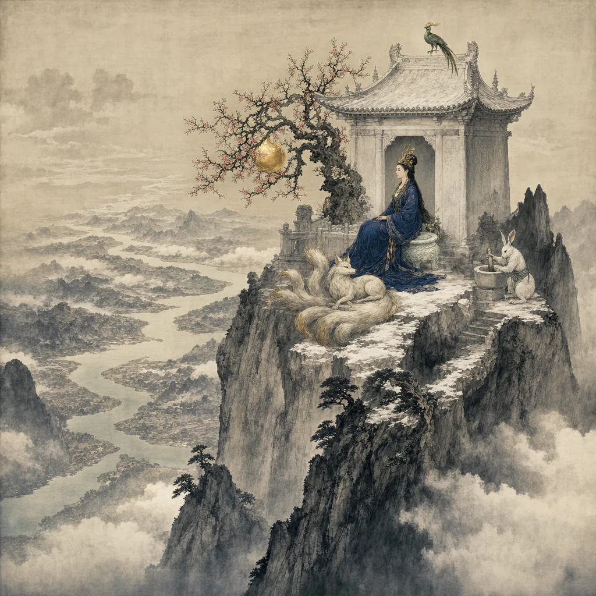